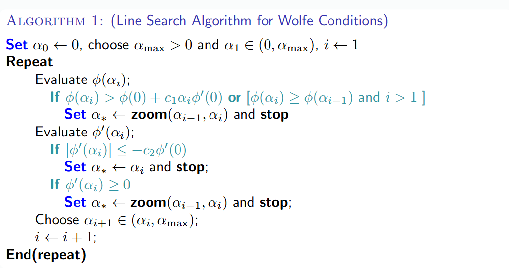
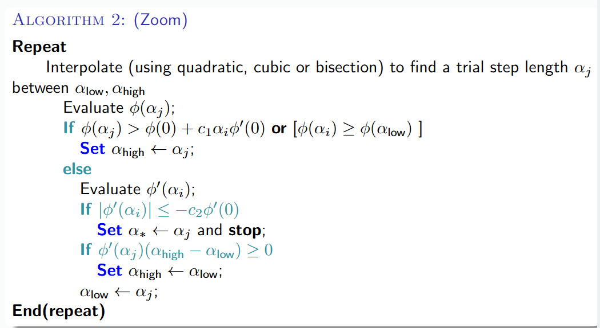

线搜索方法
在本章伊始，我们曾讲到梯度类算法的一般迭代步骤为 \(x^{(k+1)}=x^{(k)}+\alpha_k d^{(k)}\)，这里要求 \(d^{(k)}\) 是一个下降方向，也即 \((d^k)^T\nabla f(x^k)<0\)（这里是因为，方向和梯度方向内积为负值，夹角为钝角，自然能保证是下降的），这个下降性质保证了沿着此方向搜索函数 \(f\) 的值会减小。所以线搜索类算法的关键在于构造搜索方向 \(d^{(k)}\) 和步长因子 \(\alpha_k\)。而这一讲的线搜索方法就是在确定方向后，以精确或非精确的方式，找到合适的步长 \(\alpha_k\)，使得函数值得到有效的下降。
线搜索概述¶
在迭代格式中，沿着下降的方向 \(d^{(k)}\)，通过解一维最优化问题 $$ \min_{\alpha \geq 0}\varphi(\alpha)=f(x^{(k)}+\alpha d^{(k)}) $$ 确定步长因子的方法称为一维搜索（线搜索）
若以上述问题的最优解为步长，此时我们称之为精确一维搜索（精确线搜索/最优线搜索），经常用到的精确一维搜索有黄金分割法、插值迭代法等等。但即使是精确一维搜索，经过有限次计算求出上述问题的严密解一般也不可能，我们往往在得到有足够精度的近似解时就将其作为补偿。
在实际计算中，我们往往不是求解一维最优化问题，而是找出满足某些适当条件的粗略近似解作为步长，此时称为非精确一维搜索（近似一维搜索），比如使目标函数 \(f\) 得到可以接受的下降量，也即使得下降量 \(f(x^{(k)})-f(x^{(k)}+\alpha_kd^{(k)})>0\) 是可接受的。
线搜索的重要性¶

如上图，我们没有经过线搜索的计算，随意选取步长，由于步长 \(\alpha\) 选择较大，迭代产生了左右震荡。反之若是步长太小，算法收敛速度非常缓慢。而线搜索的目标就是使得沿着下降方向 \(d\)，每次的函数值满足充分下降条件。
线搜索区间¶
线搜索结构¶
线搜索的主要结构如下：
- 在进行一维搜索之前，我们首先确定一个包含问题最优解的搜索区间
- 采用某种分割技术或者插值方法缩小这个区间，进行搜索
例如我们设 \(\alpha^{*}\) 是满足 \(\varphi(\alpha^{*})=\min_{\alpha \geq 0}\varphi(\alpha)\) 的精确解，如果存在 \([a,b]\subset [0,\infty)\)，使得 \(\alpha^{*}\in[a,b]\)，我们就称 \([a,b]\) 是一维极小化 \(\min_{\alpha\geq 0}\varphi(\alpha)\) 的搜索区间
进退法¶
进退法是一种确定搜索区间的简单方法，其基本思想是，从一点出发，按一定步长前进/后退，始终将函数值维持"高-低-高"的模式，如果一个方向不成功，就退回来，沿相反方向寻找，其算法流程如下：
- 选取初始数据：给定 \(\alpha_0,h_0>0\)，加倍系数 \(t>1\)，计算 \(\varphi(\alpha_0)\)，设 \(k=0\)
- 比较目标函数值：令 \(\alpha_{k+1}=\alpha_k+h_k\)，计算 \(\varphi_{k+1}=\varphi(\alpha_{k+1})\)，如果 \(\varphi_{k+1}<\varphi_k\)，转步3，否则转步4
- 加大搜索步长：令 \(h_{k+1}=th_k,\alpha=\alpha_k,\alpha_k=\alpha_{k+1},\varphi_k=\varphi_{k+1},k=k+1\)，转步2
- 反向探索：若 \(k=0\)，转换搜索方向，令 \(h_l=-h_k,\alpha_k=\alpha_{k+1}\)，转步2，否则停止迭代（此时 \(k>0\)，在函数值下降的方向已经至少前进了一步，现在遇到函数值开始上升的顶点，形成了高低高模式，成功找到一个包含极小值的区间），令
精确线搜索¶
我们首先定义单峰/单谷函数的概念：
设 \(\varphi:R\to R,[a,b]\subset R\)，若存在 \(\alpha^{*}\in[a,b]\)，使得 \(\varphi(\alpha)\) 在 \([a,\alpha^*]\) 上严格递减，在 \([\alpha^*,b]\) 上严格递增，则称 \([a,b]\) 是函数 \(\varphi\) 的单峰区间；类似可以定义单谷区间。
分割法¶
分割法包括黄金分割法、斐波那契法、二分法等等，其基本思想是不断取试探点并比较函数值，来持续缩小包含极值点的搜索区间，当区间长度缩短到一定程度的时候，区间上各点均接近极小值，我们仅需要计算函数值，不需要计算导数值，适用于非光滑以及导数表达式复杂或者无法写出的情形。
我们设 \(\varphi(\alpha)=f(x_k+\alpha p_k)\) 是搜索区间 \([a_1,b_1]\) 上的单峰函数，其中 \(p_k\) 是当前步的方向，并假设在 \(k\) 次迭代时搜索区间为 \([a_k,b_k]\)，取两个试探点 \(\lambda_k,\mu_k\in[a_k,b_k]\)，且 \(\lambda_k<\mu_k\)，要求满足下面两个条件：
- \(\lambda_k\) 和 \(\mu_k\) 到搜索区间 \([a_k,b_k]\) 两端点等距，也即 \(b_k-\lambda_k=\mu_k-a_k\)
- 每次迭代，搜索区间长度缩短率相同，也即 \(b_{k+1}-a_{k+1}=\tau(b_k-a_k)\)
如果 \(\varphi(\lambda_k)\leq \varphi(\mu_k)\)，此时 \(a_k,\lambda_k,\mu_k\) 组成了一组高-低-高，我们就令 \(a_{k+1}=a_k,b_{k+1}=\mu_k\)；如果 \(\varphi(\lambda_k)>\varphi(\mu_k)\)，此时 \(\lambda_k,\mu_k,b_k\) 就构成了一组高-低-高，令 \(a_{k+1}=\lambda_k,b_{k+1}=b_k\)。
黄金分割法¶
对于黄金分割法，\(\tau = \frac{\sqrt{5}-1}{2}\approx 0.618\)，并且有 $$ \lambda_k=a_k+0.382(b_k-a_k),\qquad \mu_k=a_k+0.618(b_k-a_k) $$
Fibonacci 法¶
Fibonacci 法预先设定迭代次数 \(n\)，故对于Fibonacci法，\(\tau\) 不再是常数，而是随 \(k\) 变化的 \(\tau_k\)，下面我们进行推导。
首先回忆一下 Fibonacci 数列的定义，\(F_0=0,F_1=F_2=1,F_{k+1}=F_{k}+F_{k-1},k=1,2,\cdots\)，并且 Fibonacci 法也遵循区间缩减法的一般规律。我们假设在第 \(k\) 次迭代后，新区间的长度 \(L_{k+1}\) 与原区间长度 \(L_k\) 的关系是 \(L_{k+1}=\tau_k L_k\)，且两个试探点 \(\lambda_k,\mu_k\) 将区间分为 \(\lambda_k-a_k,\mu_k-\lambda_k,b_k-\mu_k\) 三段，并且 \(\lambda_k-a_k=b_k-\mu_k\)。在推导 Fibonacci 法时很精妙的一步是，我们希望上一步留下的内部试探点，可以成为下一步新区间的试探点之一，这样我们每次迭代就只需要计算一次新的函数值。
假设第 \(k\) 步我们比较之后发现有 \(\varphi(\lambda_k)\leq \varphi(\mu_k)\)，那么极小值一定在 \([a_k,\mu_k]\) 内部，所以
我们的新区间为 \([a_{k+1},b_{k+1}]=[a_k,\mu_k]\)，新区间的长度是 \(L_{k+1}=\mu_k-a_k\)，并且我们此时希望能够复用
二分法¶
二分法中 \(\lambda_k=\mu_k=\frac{a_k+b_k}{2}\)
Tip
分割法都是线性收敛的方法
插值法¶
插值法的基本思想是在搜索区间中不断使用低次多项式来近似目标函数，并逐步用插值多项式的极小点来逼近一位搜索问题 \(\min_{\alpha}\varphi(\alpha)\) 的极小值点，当函数解析性质比较好的时候，插值法比分割法效果更好。
插值法有二次插值法（单点、二点、三点）、三次插值法（二点）等等，其中单点二次插值本质上就是牛顿法，具有局部二阶收敛性，例如设 \(q(\alpha)=a\alpha^2+b\alpha+c\)，满足 \(q(\alpha_1)=\varphi(\alpha_1),q'(\alpha_1)=\varphi'(\alpha_1),q''(\alpha_1)=\varphi''(\alpha_1)\)，直接求解 \(q(\alpha)\) 的最小值可以得到 $$ \overline{\alpha}=-\frac{2b}{a}=\alpha_1-\frac{\varphi'(\alpha_1)}{\varphi''(\alpha_1)} $$
精确线性搜索的收敛性¶
下面我们将证明精确线性搜索的收敛性，首先我们给出一个定理，只要目标函数的二阶导数有界，那么通过精确线性搜索（即找到最优的步长 \(\alpha_k\)）得到的函数值下降量是有下界的。
定理 设 \(\alpha_k>0\) 是精确线性搜索的解，\(||\nabla^2f(x_k+\alpha p_k)||\leq M\)，则有 $$ f(x_k)-f(x_k+\alpha_kp_k)\geq \frac{1}{2M}||\nabla f(x_k)||^2\cos^2 \theta_k $$ 其中 \(M\) 是 \(Hessian\) 矩阵模的上界，\(\theta_k\) 是搜索方向 \(p_k\) 与梯度 \(\nabla f(x_k)\) 之间的夹角，也即满足 \(\cos \theta_k=\frac{p_k^T\nabla f(x_k)}{||p_k||||\nabla f(x_k)||}\)
证明 由假设可以知道，对于任意的 \(\alpha\) 满足 $$ f(x_k+\alpha p_k)\leq f(x_k)+\alpha p_k^T\nabla f(x_k)+\frac{\alpha^2}{2}M||p_k||^2 $$ 取 \(\alpha=\overline{\alpha}=-\frac{p_k^T\nabla f(x_k)}{M||p_k||^2}\)，则有 $$ f(x_k)-f(x_k+\alpha_kp_k)\geq f(x_k)-f(x_k+\overline{\alpha}p_k)\geq -\overline{\alpha}p_k^T\nabla f(x_k)-\frac{\overline{\alpha}^2}{2}M||p_k||^2\ =\frac{1}{2}\frac{(p_k^T\nabla f(x_k))^2}{M||p_k||^2}=\frac{1}{2M}||\nabla f(x_k)||^2\frac{(p_k^T \nabla f(x_k))^2}{||p_k||^2||\nabla f(x_k)||^2}=\frac{1}{2M}||\nabla f(x_k)||^2\cos^2\theta_k $$
Tip
上述定理表明，只要搜索方向和梯度方向不垂直(并且搜索方向得先是个下降方向)，每次迭代都能够保证目标函数值是下降的
全局收敛性定理 设 \(\nabla f(x)\) 在水平集 \(L=\{x\in R^n|f(x)\leq f(x_0)\}\) 上存在且一致连续，并且选取的方向 \(p_k\) 与负梯度 \(-\nabla f(x_k)\) 的夹角 \(\theta_k\) 满足，存在某个 \(\mu\) $$ \theta_k \leq \frac{\pi}{2}-\mu $$ 对所有 \(k\) 成立，则或者有对某个 \(k\) 有 \(\nabla f(x_k)=0\)（代表在某一步找到了最优解），或者有 \(f(x_k)\to -\infty\)，或者有 \(\nabla f(x_k)\to 0\)，这保证了算法不会停留在非最优点
收敛速度 假设产生的序列 \(\{x_k\}\) 收敛到 \(f(x)\) 的极小值点 \(x^{*}\)，如果 \(f(x)\) 在 \(x^{*}\) 的某个领域内二次连续可微，且存在 \(\varepsilon>0\) 和 \(M>m>0\)，使得当 \(||x-x^{*}||<\varepsilon\) 时，有 $$ m||y||^2\leq y^TG(x)y\leq M||y^2||, \ \ \ \forall y\in R^n $$ 则 \(\{x_k\}\) 线性收敛
不精确一维搜索法¶
事实上，精确一维搜索的代价是巨大的，并且对于牛顿法、拟牛顿法等高效算法来说并不必要，更为实用的反而是不精确一维搜索
线搜索准则¶
前面我们提到，不精确线性搜索是找出满足某些适当条件的粗略近似解作为步长，下面我们介绍选取 \(\alpha_k\) 需要满足的要求，我们将其称为线搜索准则，需要指出的是，线搜索准则的合适与否直接决定了算法的收敛性，如果选取不合适的线搜索准则将会导致算法无法收敛，比如我们考虑这样一个一维的无约束优化问题
例 考虑一维无约束优化问题 $$ \min_x f(x)=x^2 $$ 迭代初始点 \(x^0=1\)，问题是一维的，下降方向只有 \(x\) 轴正向和负向两种，我们选取 \(d_k=-\text{sign}(x_k)\)，且我们只要求选取的补偿满足迭代点处函数值单调下降，也即 \(f(x_k+\alpha_k d_k)<f(x_k)\)，我们可以考虑如下两种步长： $$ \alpha_{k,1}=\frac{1}{3^{k+1}},\qquad \alpha_{k,2}=1+\frac{2}{3^{k+1}} $$ 通过简单计算可以得到 $$ x_k^1=\frac{1}{2}(1+\frac{1}{3^k}),\qquad x_k^2=\frac{(-1)^k}{2}(1+\frac{1}{3^k}) $$ 显然，序列 \(\{f(x_k^1)\}\) 和序列 \(\{f(x_k^2)\}\) 均单调下降，但是序列 \(\{x_k^1\}\) 收敛的点不是极小值点，序列 \(\{x_k^2\}\) 振荡不收敛
下面我们给出一些线搜索准则以确保迭代的收敛性
Armijo 准则¶
Armijo 准则是保证步长能够是函数值有足够的下降，但其无法避免步长过小的问题
Armijo 准则 设 \(d_k\) 是点 \(x_k\) 处的下降方向，若 $$ f(x_k+\alpha d_k)\leq f(x_k)+c_1\alpha \nabla f(x_k)^Td_k $$ 则称步长 \(\alpha\) 满足 Armijo 准则，其中 \(c_1\in(0,1)\) 是一个常数
Armijo 准则的几何意义是，点 \((\alpha,\varphi(\alpha))\) 必须在直线 $$ l(\alpha)= \varphi(0)+c_1\alpha \nabla f(x_k)^Td_k $$ 的下方，如下图所示：

区间 \([0,\alpha_1]\) 中的点均满足 Armijo 准则。在实际应用中，参数 \(c_1\) 我们往往选取一个很小的正数，比如 \(c_1=10^{-3}\)，这使得 Armijo 准则非常容易得到满足。但是仅仅使用 Armijo 准则并不能保证迭代的收敛性，比如 \(\alpha = 0\) 显然满足条件，但迭代序列中的点固定不变，也没有意义，所以我们还需要引入其他准则。
Goldstein 准则¶
为了克服 Armijo 准则的缺陷，我们需要引入其他准则来保证每一步的 \(\alpha_k\) 不会太小，Armijo 准则是要求点 \(\alpha,\varphi(\alpha)\) 必须处在某条直线的下方，我们也可以使用相同的形式，使得该点必须处在另一条直线的上方，以排除太小的 \(\alpha_k\)，这就是 Goldstein 准则
Goldstein 准则 设 \(d_k\) 是点 \(x_k\) 处的下降方向，若 $$ f(x_k+\alpha d_k)\leq f(x_k)+c\alpha\nabla f(x_k)^Td_k\ f(x_k+\alpha d_k)\geq f(x_k)+(1-c)\alpha \nabla f(x_k)^Td_k $$ 则称步长 \(\alpha\) 满足 Goldstein 准则，其中 \(c\in(0,\frac{1}{2})\)
类似 Armijo 准则，Goldstein 准则也有非常直观的集合含义，它指的是点 \((\alpha,\varphi(\alpha))\) 必须在两条直线 $$ l_1(\alpha)=\varphi(0)+c\alpha \nabla f(x_k)^Td_k\ l_2(\alpha)=\varphi(0)+(1-c)\alpha \nabla f(x_k)^Td_k $$ 之间，如下图所示：

区间 \([\alpha_1,\alpha_2]\) 中的点均满足 Goldstein 准则，并且其剔除了过小的 \(\alpha\)
但同样，我们会发现 Goldstein 准则的问题，它虽然能够使得函数值充分下降，但是它可能避开了最优的函数值，例如在上图中，一维函数 \(\varphi(\alpha)\) 的最小值点并不在满足 Goldstein 准则的区间 \([\alpha_1,\alpha_2]\) 中，所以我们还需要引入新的准则
Wolfe 准则¶
Wolfe准则 设 \(d_k\) 是点 \(x_k\) 处的下降方向，若 $$ f(x_k+\alpha d_k)\leq f(x_k)+c_1\alpha \nabla f(x_k)^Td_k\ \nabla f(x_k+\alpha d_k)^T d_k\geq c_2\nabla f(x_k)^Td_k $$ 则称步长 \(\alpha\) 满足 Wolfe 准则，其中 \(c_1,c_2\in(0,1)\) 为给定的常数且 \(c_1<c_2\)
上述准则中，第一个不等式即是 Armijo 准则，第二个不等式是 Wolfe 准则的本质要求。\(\nabla f(x_k+\alpha d_k)^Td_k\) 其实恰好是 \(\varphi(\alpha)\) 的导数，这条不等式实际上是要求 \(\varphi(\alpha)\) 在点 \(\alpha\) 处的切线的斜率不能小于 \(\varphi'(0)\) 的 \(c_2\) 倍，如下图所示：

在上图中，区间 \([\alpha_1,\alpha_2]\) 中的点均满足 Wolfe 准则。并且由于 \(\varphi(\alpha)\) 的极小值点 \(\alpha^{*}\) 有 $$ \varphi'(\alpha^)=\nabla f(x^k+\alpha^ d_k)^Td_k=0 $$ 因此 \(\alpha^{*}\) 永远满足第二个不等式，而选择较小的 \(c_1\) 可以使得 \(\alpha^{*}\) 同时满足第一个不等式，也即 Wolfe 准则在绝对大多数情况下都会包含线搜索子问题的精确解。在实际应用中，参数 \(c_2\) 通常取为 \(0.9\)
补充
Strong Wolfe Condition： Strong Wolfe conditions 是标准 Wolfe 准则的一个变体，其仍然满足第一条充分下降条件，但第二条曲率条件通过绝对值来约束新梯度的斜率，也即： $$ f(x_k+\alpha d_k)\leq f(x_k)+c_1\alpha\nabla f(x_k)^Td_k\ |\nabla f(x_k+\alpha d_k)^Td_k|\leq c_2|(\nabla f(x_k))^T d_k| $$ Strong Wolfe 准则不仅防止了新的斜率过负，也禁止它变得过正，可以排除那些虽然满足标准 Wolfe 条件但距离一维函数 \(\varphi(\alpha)\) 的极小值较远的点，从而将步长 \(\alpha_k\) 约束在一个更接近极小值点的邻域内。
线搜索回溯法¶
线搜索回溯法用于寻找一个满足 Armijo 准则的步长。给定初值 \(\hat{\alpha}\)，线搜索回溯法通过不断以指数方式缩小试探步长，找到第一个满足 Armijo 准则的点，具体来说，线搜索回溯法选取 $$ \alpha_k = \gamma^{j_0}\hat{\alpha} $$ 其中 $$ j_0=\min{j=0,1,\cdots|f(x_k+\gamma^j\hat{\alpha}d_k)\leq f(x_k)+c_1\gamma^{j}\hat{\alpha}\nabla f(x_k)^Td_k} $$ 参数 \(\gamma\in(0,1)\) 为一个给定的实数，其算法为代码如下：
- 选择初始步长 \(\hat{\alpha}\)，参数 \(\gamma,c\in(0,1)\)，初始化 \(\alpha \leftarrow \hat{\alpha}\)
- while \(f(x_k+\alpha d_k)>f(x_k)+c\alpha\nabla f(x_k)^Td_k\) do
- 令 \(\alpha \leftarrow \gamma \alpha\)
- end while
- 输出 \(\alpha_k=\alpha\)
该算法被称为线搜索回溯法是因为 \(\alpha\) 的试验值是由大至小的，它可以确保输出的 \(\alpha_k\) 能尽可能大，并且算法也不会无限进行下去，因为 \(d_k\) 是一个下降方向，当 \(\alpha\) 充分小时，Armijo 准则总是成立的，在实际应用中我们通常也会给 \(\alpha\) 设置一个下界，防止步长过小。
Tip
在线搜索回溯法的过程中，初始步长 \(\hat{\alpha}\) 在牛顿法和拟牛顿法中被选为 \(1\)，但在最速下降法或共轭梯度法等其他算法中也可以是不同的值。
通用步长选择算法框架¶
线搜索回溯法虽然简单，但是它只满足 Armijo 条件，有时候我们可能需要满足更严格的 Wolfe 条件，就需要一个更通用的算法框架，我们考虑寻找一维函数 $$ \varphi(\alpha)=f(x_k+\alpha p_k) $$ 的最小值的方法，或者仅仅是寻找满足终止条件之一（比如 Wolfe 准则和 Goldstein 准则）。
如果 \(f\) 是一个凸二次函数 \(f(x)=\frac{1}{2}x^TQx-b^Tx\)，那么沿着 \(x_k+\alpha p_k\) 的最小值可以通过求导求极值的方法计算，可以得到 $$ \alpha_k=\frac{(\nabla f(x_k))^Tp_k}{p_kQp_k} $$ 而如果 \(f\) 是一个一般的非线性函数，我们就需要使用迭代过程，典型的过程包括两个阶段：
- 设界(bracketing phase)：找到包含可接受步长区间的区间 \([\overline{a},\overline{b}]\)
- 选择(selection phase)：缩放定位最终步长
插值法¶
在选择阶段，我们可以使用插值法来提高效率，其基本思想是用一个简单的低阶多项式来近似模拟目标函数 \(\varphi(\alpha)=f(x_k+\alpha p_k)\) 的局部形状，然后求解这个简单的多项式的极小点来作为下一个试验步长。插值过程是迭代进行的，通常从二次插值开始，如果信息更充分或二次插值效果不佳，就用三次插值
二次插值：二次插值前我们通常有一个初始的试验步长 \(\alpha_0\)，这个 \(\alpha_0\) 不满足充分下降条件，也即 \(\varphi(\alpha_0)>\varphi(0)+c_1\alpha_0\varphi'(0)\)，在这种情况下，一个可接受的步长一定存在于区间 \([0,\alpha_0]\)之内。并且我们已知三个信息点，初始函数值 \(\varphi(0)\)，初始导数值 \(\varphi'(0)\)，试验点函数值 \(\varphi(\alpha_0)\)，我们构造一个二次函数 \(\varphi_q(\alpha)=a\alpha^2+b\alpha+c\) 来逼近 \(\varphi(\alpha)\)，让其通过这三个信息点，则可以得到 $$ \varphi_q(\alpha)=(\frac{\varphi(\alpha_0)-\varphi(0)-\alpha_0\varphi'(0)}{\alpha_0^2})\alpha^2+\varphi'(0)\alpha +\varphi(0) $$ 我们的下一个试验步长 \(\alpha_1\) 就是这个二次函数的极小值点，我们对 \(\varphi_q(\alpha)\) 求导可以解得 $$ \alpha_1=-\frac{\varphi'(0)\alpha_0^2}{2[\varphi(\alpha_0)-\varphi(0)-\varphi'(0)\alpha_0]} $$ 计算出 \(\alpha_1\) 后，我们会再次检查它是否满足充分下降条件。如果满足，线搜索就结束；否则进入三次插值
三次插值：当二次插值产生的点 \(\alpha_1\) 仍然不满足条件时，我们就得到了更多信息，可以构建一个更精确的三次模型，现在有四个信息点，\(\varphi(0),\varphi'(0),\varphi(\alpha_0),\varphi(\alpha_1)\)，可以构造一个三次函数 \(\varphi_c(\alpha)=a\alpha^3+b\alpha^2+c\alpha +d\) 来同时满足这四个条件，我们容易得到 \(c=\varphi'(0),d=\varphi(0)\)，系数 \(a,b\) 可以解线性方程组的解，这里我们直接给出 $$ [a,b]^T=\frac{1}{\alpha_0^2\alpha_1^2(\alpha_1-\alpha_0)}
\begin{bmatrix} \varphi(\alpha_1)-\varphi(0)-\varphi'(0)\alpha_1\ \varphi(\alpha_0)-\varphi(0)-\varphi'(0)\alpha_0 \end{bmatrix} $$ 下一个试验步长 \(\alpha_2\) 是这个三次函数的极小值点，可以解得 $$ \alpha_2=\frac{-b+\sqrt{b^2-3a\varphi'(0)}}{3a} $$
初始步长¶
牛顿法和拟牛顿法的初始试验步长应该取为 \(1\)，也即 \(\alpha_0=1\)
最速下降法和共轭梯度法产生的搜索方向并没有经过良好的缩放，\(\alpha_0=1\) 往往是一个比较差的猜测，我们需要一些更好的策略，主要有两种
不精确线搜索算法示例¶


算法1是主循环，负责从一个初始点开始，通过不断尝试更大的步长来寻找一个设界区间 \([\alpha_{i-1},\alpha_i]\)；算法2是辅助方法，当主程序找到了一个包含解的区间 \([a_{low},a_{high}]\) 后，其在这个区间内高效地找到最终的步长。
收敛性分析¶
这里的收敛性分析建立在一般的不精确线搜索类算法的框架上，得到的结论较弱。
Zoutendijk 定理¶
Zoutendijk 定理是线搜索方法收敛性的核心定理，为所有使用 Wolfe 准则的先搜索算法提供了一个统一的基本收敛性结论
(Zoutendijk) 考虑一般的迭代格式 \(x_{k+1}=x_k+\alpha_k d_k\)，其中 \(d_k\) 是搜索方向，\(\alpha_k\) 是步长，且在迭代过程中 Wolfe 准则满足，我们假设目标函数 \(f\) 下有界、连续可微且梯度 \(L-\)利普希茨连续，也即 $$ ||\nabla f((x)-\nabla f(y)||\leq L||x-y||,\forall x,y\in R^n $$ 那么 $$ \sum_{k=0}^{\infty}\cos^2\theta_k ||\nabla f(x_k)||^2<\infty $$ 其中 \(\cos\theta_k\) 为负梯度 \(-\nabla f(x_k)\) 和下降方向 \(d_k\) 夹角的余弦，也即 $$ \cos\theta_k=\frac{-\nabla f(x_k)^Td_k}{||\nabla f(x_k)||\cdot||d_k||} $$
上述不等式我们称为 Zoutendijk 条件
证明
证明可以参考文老师的书
线搜索算法收敛性¶
Zoutendijk 定理直接导出了保证算法全局收敛的关键条件，由 Zoutendijk 条件可以得到 $$ \lim_{k\to\infty}\cos^2\theta_k||\nabla f(x_k)||^2=0 $$ 而为了由其导出 \(||\nabla f(x_k)||\to 0\)，我们需要确保 \(\cos^2\theta_k\) 不趋于 \(0\)，也即搜索方向 \(p_k\) 不能与梯度方向 \(\nabla f(x_k)\) 趋于正交，即必须存在一个常数 \(\delta >0\)，使得对于所有的迭代步 \(k\) 都满足： $$ \cos\theta_k\geq \delta >0 $$ 这些条件保证了搜索方向始终是一个足够好的下降方向。
由此我们导出了线搜索算法的收敛性定理：对于迭代法 \(x_{k+1}=x_k+\alpha_kd_k\)，设 \(\theta_k\) 为每一步负梯度 \(-\nabla f(x_k)\) 与下降方向 \(d_k\) 的夹角，并假设对任意的 \(k\)，存在常数 \(\gamma >0\)，使得 $$ \theta_k<\frac{\pi}{2}-\gamma $$ 则在 Zoutendijk 定理成立的条件下，有 $$ \lim_{k\to\infty}\nabla f(x_k)=0 $$
Tip
上述定理仅仅给出了最基本的收敛性，而没有进一步回答算法的收敛速度，这是因为算法收敛速度极大地取决于 \(d_k\) 的选择，下面一节我们将着重介绍如何选取下降方向 \(d_k\)